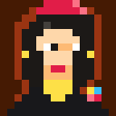

No “to” After Modal Verbs
- you must to study and you must to have your thoughts → you must study and think for yourself
- Rule: Pure modals (must, should, can, might) always take the bare infinitive (never must to).

Noemi • C1 Fluency & DebateYour complete class scratchpad from Wednesday morning paired with modal bare-infinitive fixes (must study), reflexive collocations (commit suicide / kill himself), legal prepositions (sentenced to, convicted of, found guilty of), and 6 C1 Part 4 transformations.
Take 1 minute to jot down 4 trigger keywords down the margin (no full sentences), then speak for 2 minutes straight.
Everything captured live in today’s discussion, from dating apps and false advertising to Simone de Beauvoir and sentencing disparities.
Click each missing preposition or verb pattern below to lock in exact C1 pairings from today’s debate.
| Target Phrase | Exact Collocation | Example Context |
|---|---|---|
| convicted ___ | Someone convicted of causing death by dangerous driving. | |
| sentenced ___ | He was sentenced to 10 years in prison. | |
| found guilty ___ | A former flatmate was found guilty of the offence. | |
| cynical ___ | It makes you cynical of people’s real motivations. | |
| put emphasis ___ | Do you think too much emphasis is put on one type of crime? | |
| correlation ___ | The correlation between education and freedom from abuse. |
1. Repair: “You must to study and you must to have your own thoughts if you want to emancipate yourself.”
2. Repair: “Before the scandal, he tried to suicide himself.”
3. Upgrade: “They don’t highlight the ignorance that contributes to abusive relationships, or the aspect that education can help people free themselves.”
4. Upgrade: “I don’t think we should do a quick judgement on someone’s profile.”
5. Contrastive Sentencing Upgrade: “He took 10 years in jail for that, while dangerous driving only gets 5 years.”
Complete the second sentence so that it has a similar meaning to the first, using between 3 and 6 words including the key word unchanged.
We should not form an opinion about people based only on a dating app.
We should not people based only on a dating app.
The judge gave the defendant a ten-year prison term for the offence.
The defendant in prison for the offence.
The court concluded that her former flatmate had committed the crime.
Her former flatmate committing the crime.
Modern dating apps often cause people to distrust other users’ true motives.
Modern dating apps often cause people other users’ true motives.
Everyone must accept the consequences of their own choices.
Everyone needs their own choices.
Do you think courts focus too heavily on certain cases compared with others?
Do you think too certain cases compared with others?